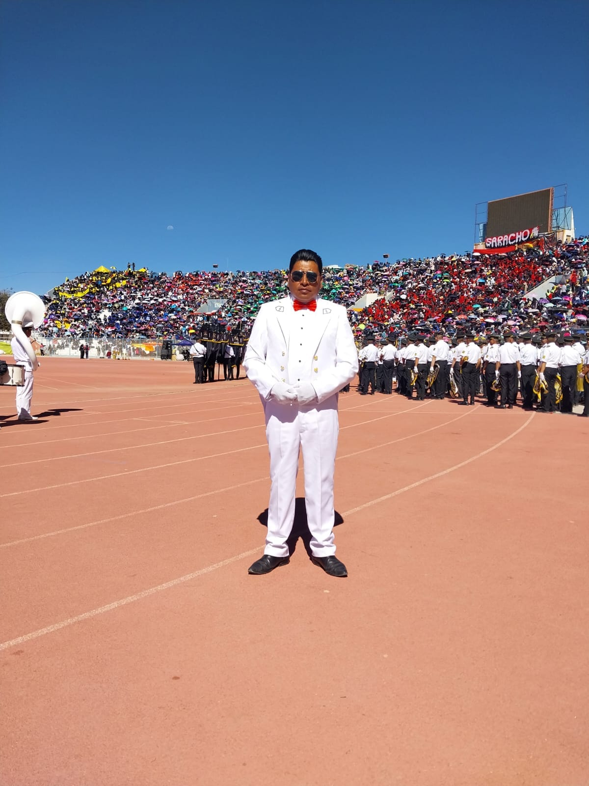

“La historia de "La Kantuta 3" es un testimonio viviente de cómo la pasión, el talento y la determinación pueden transformar simples notas musicales en una sinfonía resonante que eleva el espíritu humano. A medida que continúan su viaje musical, esta banda sigue siendo un faro de inspiración para generaciones futuras, recordándonos el poder transformador de la música y el impacto duradero que puede tener en nuestras vidas.”
«Fue en el año 2010 cuando resonaron por primera vez los acordes de esta prometedora banda»
«Con la llegada del profesor Guillen Choque, la banda se sometió a una emocionante refundación. Bajo su tutela, la banda adoptó un nuevo uniforme blanco, inspirado en la majestuosidad de la Fuerza Naval. Este cambio marcó un hito significativo en su evolución, simbolizando la pureza de su música y el compromiso con la excelencia»
MAS INFORMACIONCon el nuevo uniforme vino un nuevo impulso, y "La Kantuta 3" comenzó su ascenso desde las categorías más bajas hasta alcanzar la cúspide de la excelencia musical: la categoría A. Con dedicación y perseverancia, los miembros de la banda pulieron sus habilidades, perfeccionaron sus actuaciones y cautivaron audiencias no solo a nivel local, sino también nacional.